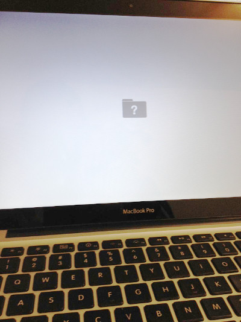
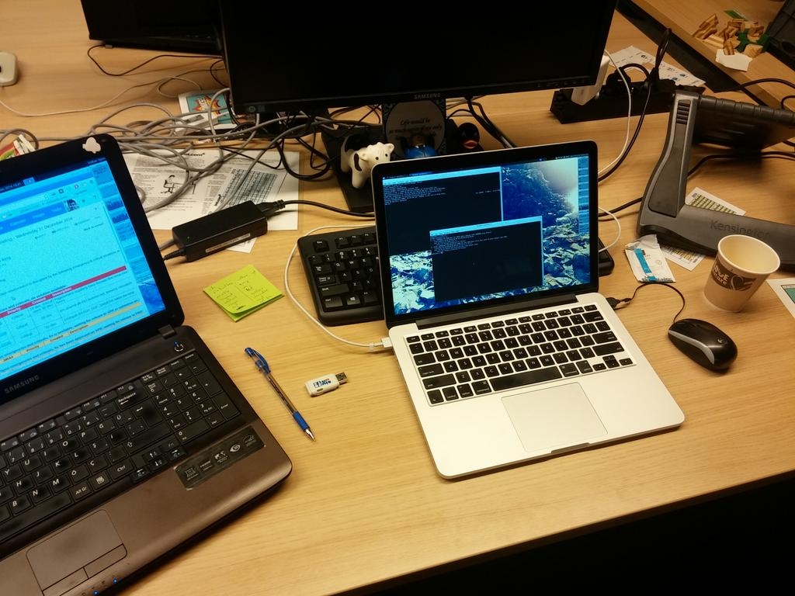

Two months ago I was given a shiny Apple Macbook Pro 11 as my development system at work. This was my first introduction to Apple – with the exception of using Macintosh Classic at my fathers printing office back in the early 90s. After spending more than 15 years in the mazes of GNU/Linux ecosystem, it made a cold bath effect on me and I needed at least 2-3 days to get adapted to the system and start writing a couple of lines of useful code. I must admit that I was uncomfortable and, as a result of this, unhappy from the very first moment. The hardware was gorgeous; battery life, display resolution, quality, and colors were mind-blowing and of no match. That being said, I really could not get the feel of a power-user that I used to have in my old GNU/Linux box. Having the menu shared between windows was almost made me puke. I have been using focus follows pointer feature for quite some time and it was out of question. I tried really hard for getting used to the UI interactions. I mean, it is not that I tried to modify the UI to adopt my old conventions. Instead, I tried to do it in the OSX way of doing things. But the desktop was far from being usable compared to what I had at Xfce, Fluxbox, i3, etc. In addition to all these interface integration aches, I really got amazed to see how hard OSX users try to make it look like a GNU/Linux environment: I mean, you are expected to install a handful of garbage using a blend of tools varying from brew to DMG, gem to Xcode, etc. just to establish a decent development environment. The more I used the system, the more I get necessary confidence to replace OSX with a GNU/Linux distribution, which is Xubuntu for my case.
First, I checked the avalability of having a GNU/Linux on this hardware with ups and downs. Installing Ubuntu on a MacBook Pro page was really helpful in this context. There instructions were clean, to the point, and most of the time produced the expected output for me. Next, while I will keep OSX next to my GNU/Linux, I take a backup of my local files on OSX just for case of emergency.
As instructed, I first partitioned the current OSX disk into two using Disk Utility. Just to make sure everything still works, I verified the partition table and it was looking fine. Then I restarted the machine to make really sure that everything was fine. And… Boom!

And I was introduced to the OSX question mark folder. No error messages, no
explanations, nothing! That was exactly the same situation that I was driven
away from Microsoft Windows more than a decade ago. God! I did not even know
how to search for this error, since there were no texts or anything on the
screen. Anyway, I tried to describe the image I saw using words on Google and
voila! After wasting a day on various theories related with the error, I
figured out that the problem was caused by the lock on the partition that was
put there by Help Desk guys who handed me the notebook. Damn! I restarted the
system pressing Command+R and logon to the system in rescue mode and removed
the partition lock. (I needed to go to the Help Desk anyway to get the rescue
mode password.) This time restarting the system led me into OSX without a
glitch.
The rest of the installation was like taking a candy from a baby, if you know
what I mean. I downloaded the Xubuntu 14.10 into a USB disk, rebooted the
system by pressing Option key, selected the boot drive and there Ubuntu
installation screen greeted me. At the end of the installation, prior to
restarting the system, I just needed to set the EFI boot order via efibootmgr
-o 0,80 and I was done. Now I could do the rest of the work (adding an entry
for OSX to GRUB, appending libata.force=noncq to the kernel boot parameters,
etc.) when I logged into my brand new GNU/Linux system! I crossed my fingers
and restarted it system…
After restart I directly got forwarded to the Xubuntu boot sequence, that is, GRUB display was missing. For a second that made me a little bit nervous, but later I figured out that I can still boot the OSX partition via opening the machine in rescue mode, hence no worries. After all, I want to get rid of OSX all together. And when I see the blue Xubuntu loading logo running on the screen I cannot express my relief and excitement. I installed GNU/Linux on hundreds of systems, but none gave a joy even close to ditching OSX away.
As a regular GNU/Linux user, I also am used to live with the fact that Linux kernel needs a little bit tweaking at each installation. So I started checking if everything was working.
As I get more positive checks my inclination to believe that something serious will get mess the whole thing up was increasing. I continued…
aptitude install bcmwl-kernel-source
did the necessary magic. (Time to time I needed to restart Network Manager
service after getting back from suspend, but that does not hurt much.)I must admit that: I had the most smooth GNU/Linux installation experience that I ever had since years! Almost everything was working out of the box. Looking back to days that I was going mad for my 33600 dial-up modem drivers, display resolution issues… This was really the best. And additionally, now I have the most poweful (display, processor, memory, storage, etc.) personal computer hardware under my hands that I have ever touched.
While I was enjoying my time like a 6 year old getting introduced to his first computer, I got my first hit: Suspend was not working. I mean, I was closing the lid, the Apple logo light was going off and coming back after a couple of seconds. I threw myself into the ocean of Google results again and found out a quick and dirty fix: Unplugging adapters (USB mouse, Thunderbolt, etc.) before suspend. It is also mentioned that the problem should have had fixed in newer kernel versions but I did not give it a try. It was not a major problem for me, at least not yet.
By default, the F keys (F1, F2, etc.) serve their traditional function
by pressing the fn key. For example, by default the F1 key lowers display
brightness and fn+F1 is the traditional F1. I switched this behavior on all
the F keys by adding a modprobe config file
etc/modprobe.d/hid-apple.conf written options hid-apple fnmode=2 in it.

As you might have guessed, I wrote this blog post in the aforementioned Xubuntu running on a Macbook Pro 11. So far my experience was totally satisfying and I believe the issues arised will disappear with a newer kernel version, of which I do not have power and time to invest right now. In conclusion, Macbook Pro is certainly a powerful hardware as a GNU/Linux development platform and I can heartly recommend it to anybody.